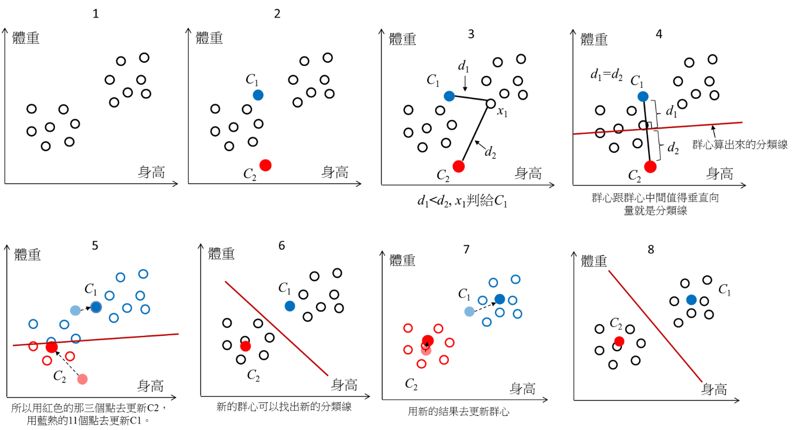

流程
- 數據蒐集:
利用穿戴式設備(如智慧手錶)、貼片或相關醫療設備蒐集數據，以心臟監測為例，智慧手錶可以透過貼附在皮膚上的電極取得數據並生成心電圖，也可透過震動感應器取得血壓數據等等。 - 數據上傳:
短距離主要以藍芽傳到電腦或手機，讓使用者平時便可直接觀察，長距離則透過網路上傳至雲端，再由使用者或醫療機關取得該數據或直接在雲端平台上做分析。 - 數據預處理:
預處理主要分成以下三種:- 去噪: 去除環境音或使用者運動等造成數據波動的正常因素
- 數據標準化: 將不同來源或不同個體的數據轉換到相同的範圍
- 基線校正: 去除因設備不穩定性造成的數據波動。
- 標註特徵:
透過標註特徵可以凸顯特定的數據，幫助AI提升識別的精確度及提高計算效率。以心電圖為例，先透過濾波器將太高和太低頻的數據去除，再將整體數據透過微積分或平方等數學方式處理使其特徵更明顯並標示出來，以協助AI識別出波峰、波谷的位置，再藉此去計算兩波的間期、使用者的心率等數據資料。 - 訓練模型:
監督學習 非監督學習 目標 將大量數據分類 將大量數據聚類或降維 功能 藉學習到的經驗，預測可能的輸出 藉群集的集散程度判斷數據異常 特徵 對標註特徵依賴性高
準確性高數據不需標註特徵
可用降維將數據結果可視化應用實例 判斷是否有心律不整
預測是否會有心血管疾病判斷心臟數據是否異常
- 持續監控與增量訓練:
模型訓練完後便可不斷蒐集新數據以做持續監控，並讓模型在檢測到異常時及時發出警報，平時則可將其數據和分析用於協助醫療診斷。另外偶爾也要對其進行增量訓練，由於新數據的不斷進入，可能使模型產生記憶衰退，讓模型忘記較老舊的數據，或是為了適應新的健康模式(如近年來心臟病風險普遍增加)，而準備一定數量的數據去讓模型熟悉並調整其原有參數。
Kmeans
一種把一堆資料點分成幾組的方法，透過讓每組的資料點彼此更接近、與其他組更遠，找到有點像「重心」的中心點。以幫助我們將人體監測數據自動分組，以辨識健康狀態模式或異常情況，提升遠程健康監控的精準性。
挑戰
噪聲的混入:
實際取得的資訊常會有外在因素的干擾，以心電圖數據為例，使用者偶然的運動、傳感式裝置故障或周遭有其他設備干擾等都可能造成AI模型判斷產生誤差或偏差。
數據安全性:
由於數據會上傳或儲存於雲端服務器，故資料可能遭到竊取或篡改，除了影響相關病患的診斷，也可能影響AI模型的訓練使其被誤導。
解決方式
數據預處理: 處理數據中的缺失值和異常值。
- 缺失值: 以平均數或中位數替代，若缺失比例過高，則將整組數據刪除。
- 異常值: 以統計方法將極端數據刪除，以免造成誤判。
端對端加密: 只有傳送和接收雙方可以取得解密後的資料，中間即使被他人截獲其也無法取得有用資訊。
未來發展潛能
隨著資料庫增大且不斷改進AI的判斷機制，可能除了即時監測還能預測短期內的可能症狀，達到預防性治療的效果。